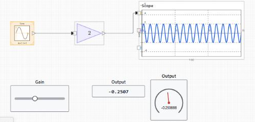

Ce troisième tutoriel ajoute des commandes interactives à un modèle en cours d'exécution. Vous posez un Slider, un Display et un Gauge, vous les liez au modèle, et vous exécutez en temps réel pour changer un paramètre et observer la réponse. Il fait suite au modèle construit dans nflow_tutorial_continuous, mais tout modèle avec un paramètre ajustable et un signal de sortie convient.
Poser les blocs dashboard
Les blocs dashboard n'ont ni port d'entrée ni port de sortie. Chacun lit ou écrit une cible que vous choisissez dans l'inspecteur, ils se posent donc n'importe où sur le diagramme sans fils.

Lier les commandes
L'état sous le sélecteur de liaison indique si la liaison est valide ou pourquoi elle ne l'est pas. Les liaisons utilisent des identifiants de bloc stables : renommer ou déplacer un bloc ne les casse pas. Voir nflow_dashboard pour toutes les commandes et tous les afficheurs, ainsi que pour les cibles de type signal, paramètre et variable.

Régler le mode d'exécution
Ne sélectionnez rien pour afficher l'onglet Modèle, puis ouvrez Simulation et réglez Exécution. Temps réel cadence l'exécution sur l'horloge réelle, donc une seconde de temps simulé prend environ une seconde, ce qui est utile pour ajuster les commandes à la main. Rapide exécute aussi vite que la machine le permet. Auto laisse le modèle décider.
Le mode d'exécution est lu au démarrage de l'exécution. Réglez-le avant d'appuyer sur Exécuter. Le changer pendant qu'une simulation tourne n'a pas d'effet sur cette exécution ; il s'applique à la suivante. C'est différent d'une commande dashboard liée à un paramètre, dont le changement est pris en compte pendant l'exécution, au pas suivant.
Exécuter et interagir
Appuyez sur Exécuter. Pendant l'exécution, faites glisser le Slider pour changer son paramètre lié. Le Display et le Gauge se mettent à jour à chaque pas majeur, et le Scope montre comment la réponse change. Un geste de pointeur qui commence sur une commande reste attaché à cette commande jusqu'au relâchement, ce qui permet de glisser un slider sans déplacer le bloc. Pour déplacer le bloc à la place, faites glisser son corps en dehors de la zone de commande.
Pour aller plus loin
Ajoutez un Lamp ou un Gauge avec des plages colorées pour signaler un seuil, ou un Push Button pour basculer un paramètre entre deux états. Ouvrez les exemples exécutables ci-dessous pour voir un panneau interactif complet.